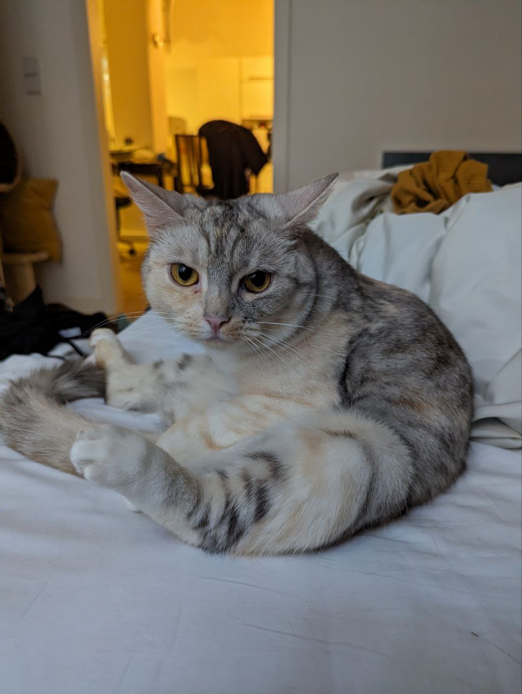

The domestic cat
Click here for more information about the lions
About domestic cats
They are often called house cats when kept as indoor pets or simply cats when there is no need to distinguish them from other felids and felines. They are often valued by humans for companionship.
There are more than seventy cat breeds recognized by various cat registries..
- They can hear sounds too faint or too high in frequency for human ears
- They can see in near darkness
- They have poorer color vision and a better sense of smell than humans.
Cat senses
History
Cats were venerated in ancient Egypt, but there may have been instances of domestication as early as the Neolithic from around 9,500 years ago (7500 BC).
Did you know that, The felids are a rapidly evolving family of mammals that includes:
- Lions
- tigers
- cougars
Media
The lions
Present in Africa and India, the lion typically inhabits grasslands and savannahs, but is absent in dense forests. It is usually more diurnal than other big cats, but when persecuted adapts to being active at night and at twilight. A lion pride consists of a few adult males, related females and cubs. Prides vary in size and composition from three to 20 adult lions, depending on habitat and prey availability. Females cooperate when hunting and prey mostly on large ungulates, including antelope, deer, buffalo, zebra and even giraffe
The difference between Characteristics and Behavior
| Characteristics | Behavior |
|---|---|
| The lion is a muscular, deep-chested cat with a short, rounded head, a reduced neck and round ears | Lions spend much of their time and resting, and are inactive for about 20 hours per day. |